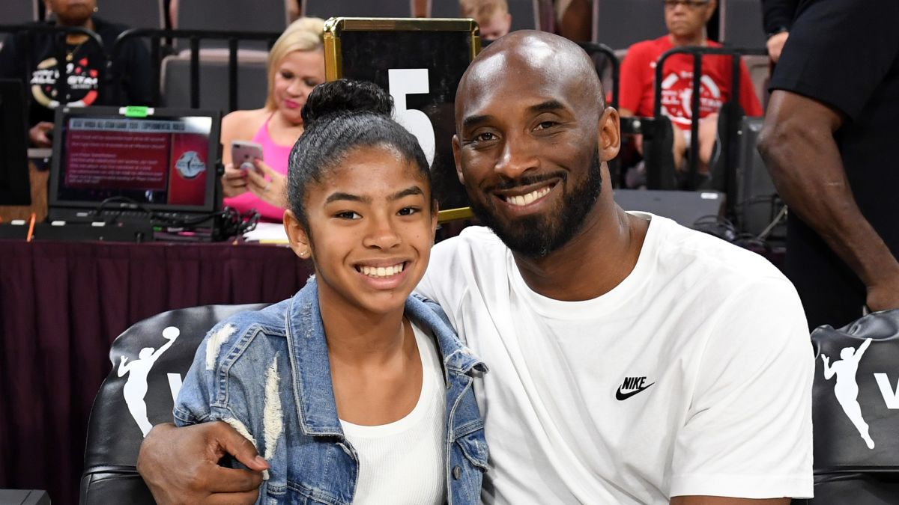

Kobe Bryant
The Greatest Basketball Player of all time
Kobe Bryant and his daugther Gianna
Here's a look at the life of former NBA player Kobe Bryant, who played 20 seasons with the Los Angeles Lakers:
Personal
- Birth date: August 23, 1978
- Death date: January 26, 2020
- Birth place: Philadelphia, Pennsylvania
- Birth name Kobe Bean Bryant
- Father: Joe Bryant, a professional basketball player
- Mother: Pam Bryant
- Marriage: Vanessa (Laine) Bryant (April 18, 2001-January 26, 2020, his death)
- Children: Capri, June 2019; Bianka, December 2016; Gianna, May 2006-January 26, 2020; Natalia, January 2003
Timeline
- 1996 - Finishes his high school career as the all-time leading scorer in the history of southeastern Pennsylvania basketball. He leads the Lower Merion Aces to a season record of 31-3 and the Class-AAAA state championship.
- 1996 - USA Today names Bryant the National High School Player of the Year and he wins the Naismith Player of the Year.
- June 26, 1996 - Bryant is selected by the Charlotte Hornets as the 13th pick in the first round of the NBA draft.
- July 11, 1996 - Is traded by Charlotte to the Los Angeles Lakers for Vlade Divac.
- 1996-2016 - Guard for the Los Angeles Lakers.
- 1996-1997 - Is named to the NBA All-Rookie Second Team.
- February 1997 - Wins the All-Star Weekend slam dunk competition, but does not play in the All-Star game.
- 1998 - Bryant is the youngest starter, at 19, in his first All-Star game.
- 2000-2002 - CBryant is the youngest starter, at 19, in his first All-Star game.
- 2002 - First of four times being named All-Star MVP. He's also named in 2007, 2009 and 2011.
- July 18, 2003 - Bryant is charged with one count of sexual assault in a case involving a 19-year-old hotel worker. The charge accuses Bryant of "sexual penetration or intrusion and (that) he caused submission of the victim through actual physical force," according to District Attorney Mark Hurlbert.
- January 19, 2004 - McDonald's announces that it will not renew Bryant's endorsement contract, which expired in December 2003.
- August 10, 2004 - The same woman from the criminal case files a civil lawsuit in federal court in Denver. The woman, under the name of "Jane Doe," claims Bryant raped her in his hotel room in a Vail-area resort in 2003 -- the same incident alleged in the criminal charge against him. The suit is for an unspecified amount of damages.
- September 1, 2004 - The criminal sexual assault charge is dropped.
- January 22, 2006 - Bryant scores 81 points in the Lakers' 122-104 win over Toronto. Only Wilt Chamberlain's 100-point game in 1962 tops this performance.
- March 2, 2005 - The accuser agrees to settle her civil lawsuit. The terms of the settlement have not been disclosed.
- May 2008 - Wins the NBA regular season MVP award.
- August 24, 2008 - Bryant wins a gold medal at the Beijing Olympics as a member of the US men's basketball team.
- 2009-2010 - The Lakers win back-to-back NBA championships.
- December 16, 2011 - Vanessa Bryant files for divorce.
- May 8, 2013 - Files a lawsuit to stop his mother, Pamela Bryant, from auctioning off memorabilia from the beginning of his basketball career. Bryant claims he did not give his mother permission to sell the items. A settlement is reached in June.
- December 8, 2013 - Bryant returns from his Achilles injury.
- December 14, 2014 - Surpasses Michael Jordan to become third on the NBA's all-time scoring list, with 32,310 career points.
- October 4, 2015 - Makes his return in a preseason game against the Utah Jazz after undergoing season-ending surgery in January.
- November 29, 2015 - In a post on The Players' Tribune, announces he intends to retire at the end of the NBA season.
- February 2016 - Bryant announces the launch of Granity Studios (formerly known as Kobe Studios), a multimedia original content company.
- April 13, 2016 - Scores 60 points in his final game, helping the Lakers defeat the Utah Jazz 101-96.
- December 18, 2017 - The Lakers retire Bryant's jersey numbers, No. 8 and No. 24, during a ceremony at halftime.
- March 4, 2018 - Wins an Academy Award for best short animated film for "Dear Basketball."
- January 26, 2020 - Bryant and his 13-year-old daughter, Gianna, are among nine people killed when a helicopter crashes into a hillside in Calabasas, California.
- February 15, 2020 - Commissioner Adam Silver announces that the MVP award for the NBA All-Star Game has been named the Kobe Bryant MVP Award.
- February 24, 2020 - A memorial service for Bryant and his daughter, an emotional and star-studded celebration of their lives, is held at the Staples Center in Los Angeles.
- April 4, 2020 - Bryant is posthumously elected into the Naismith Memorial Basketball Hall of Fame.
If you have time, you should read more about this incredible human being on his Wikipedia entry.